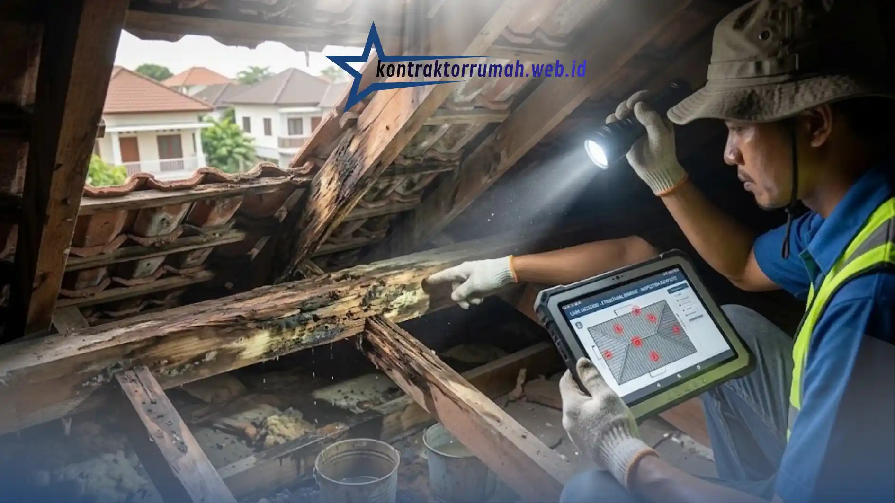

Atap rumah bocor tentu menjadi mimpi buruk bagi siapa saja, terutama saat musim hujan tiba. Air yang merembes tidak hanya mengotori dinding dan plafon, tetapi juga bisa merusak struktur bangunan serta memicu pertumbuhan jamur yang tidak sehat.
Agar perbaikan rumah Anda efektif, tahan lama, dan tidak menguras kantong, berikut panduan praktis mengatasi atap bocor mulai dari mencari sumber masalah hingga tips perawatan jangka panjang.
Poin Penting
- Temukan sumber kebocoran lebih dulu sebelum menambal, karena air bisa merambat jauh dari titik rembesan.
- Kenali jenis atap dan penyebab bocornya agar metode perbaikan tidak salah sasaran.
- Perbaiki yang rusak, bukan ganti baru, dan gunakan waterproofing berkualitas untuk hasil lebih hemat jangka panjang.
- Perhatikan kemiringan atap minimal 30 derajat agar aliran air hujan tidak terhambat.
- Serahkan pekerjaan berisiko tinggi ke tukang berpengalaman demi keamanan dan hasil yang tahan lama.
1. Cari Sumber Kebocoran Sebelum Bertindak
Sebelum buru-buru memanggil tukang atau memborong bahan bangunan, langkah paling krusial adalah menemukan titik awal air masuk.
- Mitos vs Fakta: Seringkali, tetesan air yang jatuh di plafon tidak berada tepat di bawah lubang atap. Air bisa merambat melalui rangka kayu atau baja ringan terlebih dahulu sebelum menetes di titik lain.
- Waktu Terbaik Memeriksa: Cek kondisi atap saat hujan turun atau segera sesudahnya. Gunakan senter untuk mengecek area plafon di loteng guna melacak jalur air mengalir.

Gunakan senter untuk menelusuri jalur rembesan air di loteng sebelum menentukan titik perbaikan.
2. Kenali Jenis Atap dan Karakteristik Kerusakannya
Setiap material atap memiliki cara penanganan yang berbeda, jangan disamakan.
| Jenis Atap | Penyebab Umum Bocor |
|---|---|
| Genteng (keramik/beton/tanah liat) | Genteng bergeser, retak, atau tertutup lumut sehingga air merembes lewat celah |
| Spandek / seng (metal) | Sambungan longgar, sekrup/paku pengikat aus, atau karat yang menipiskan permukaan |
| Dak beton | Retak rambut akibat pemuaian saat cuaca panas-dingin ekstrem |
3. Strategi Renovasi Hemat Biaya tapi Maksimal
Renovasi tidak harus mahal jika Anda tahu triknya:
- Perbaiki yang rusak, bukan ganti baru. Jika genteng hanya bergeser atau retak kecil, Anda tidak perlu mengganti seluruh atap. Cukup kembalikan posisinya atau tambal retakan dengan semen khusus genteng atau waterproofing sealant.
- Manfaatkan waterproofing berkualitas. Untuk dak beton atau sambungan atap logam, gunakan cat pelapis anti-bocor berbasis akrilik atau polyurethane. Produk yang sedikit lebih mahal biasanya lebih hemat dalam jangka panjang karena tidak perlu ditambal berulang kali.
- Perhatikan kemiringan atap. Kebocoran kadang terjadi karena aliran air terhambat akibat kemiringan yang kurang ideal (minimal 30 derajat untuk genteng). Jika memungkinkan, atur ulang posisi usuk dan reng.
4. Estimasi Biaya (Gambaran Umum)
Biaya renovasi sangat bergantung pada tingkat kerusakan dan material yang dipakai, namun sebagai gambaran kasar:
- Tambal retak kecil / ganti sealant: biaya paling ringan, bisa dikerjakan sendiri.
- Ganti beberapa genteng atau sekrup spandek: biaya menengah.
- Waterproofing dak beton skala penuh atau perbaikan rangka: biaya paling besar, terutama jika melibatkan jasa tukang.
Selalu minta beberapa penawaran harga dari tukang sebelum memutuskan, terutama untuk pekerjaan skala besar.
5. Kapan Harus Memanggil Profesional?
Beberapa kondisi berikut sebaiknya tidak dikerjakan sendiri:
- Kebocoran di area yang sulit dijangkau atau berisiko tinggi (atap curam, dak tinggi).
- Kerusakan struktural pada rangka kayu/baja, bukan sekadar permukaan.
- Kebocoran berulang di titik yang sama meski sudah ditambal beberapa kali.
- Anda tidak yakin dengan sumber kebocoran meski sudah diperiksa.
Menyerahkan pekerjaan berisiko ke tukang berpengalaman lebih aman dan sering kali lebih hemat dibanding risiko kecelakaan atau perbaikan yang gagal.
6. Langkah Perawatan Agar Hasil Renovasi Tahan Lama
- Ganti paku/sekrup berkarat khusus atap metal, gunakan sekrup dengan karet pelindung (sealing washer) agar air hujan tidak menyelinap lewat lubang baut.
- Bersihkan saluran air (gutter) secara rutin — daun kering atau sampah yang menyumbat talang air sering menjadi penyebab utama air meluber ke plafon.
- Lakukan inspeksi rutin setidaknya 6 bulan sekali, terutama menjelang musim hujan.
Mencegah selalu lebih baik daripada mengobati. Menangani retak kecil sejak dini akan menyelamatkan Anda dari biaya renovasi total plafon yang jauh lebih mahal di kemudian hari.
FAQ Seputar Renovasi Atap Bocor
Mulailah dengan memastikan sumber kebocoran, pilih metode perbaikan sesuai jenis atap, dan jangan ragu memanggil profesional untuk pekerjaan yang berisiko tinggi. Jika butuh pendamping tepercaya, tim jasa renovasi bangunan Kontraktor Rumah siap membantu dari pemeriksaan hingga perbaikan tuntas.